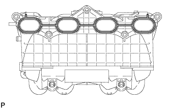
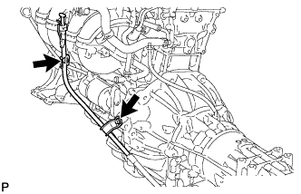

ВПУСКНОЙ КОЛЛЕКТОР > УСТАНОВКА |
| 1. УСТАНОВИТЕ ВПУСКНОЙ КОЛЛЕКТОР |
Подсоедините питающий шланг паров топлива № 2 к впускному коллектору.
Установите 2 кронштейна зажима жгута проводов на впускной коллектор и закрепите их 2 болтами.
|  |
Установите на впускной коллектор новую прокладку.
Установите впускной коллектор и закрепите его 5 болтами и 2 гайками.
Для задней стороны двигателя:
Закрепите перепускной шланг охлаждающей жидкости № 2 и подсоедините шланг вентиляции № 3 к впускному коллектору.
Для передней стороны двигателя:
Закрепите 2 зажима жгута проводов на 2 кронштейнах зажимов жгута проводов.
| 2. УСТАНОВИТЕ ЭЛЕКТРОВАКУУМНЫЙ КЛАПАН ПРОДУВКИ |
Закрепите электровакуумный клапан продувки с помощью болта.
Подсоедините 2 шланга продувки к электровакуумному клапану продувки.
Подсоедините разъем электровакуумного клапана продувки.
| 3. УСТАНОВИТЕ ТОПЛИВНУЮ РАМПУ С ТОПЛИВНОЙ ФОРСУНКОЙ |
Установите топливную рампу с топливной форсункой (Нажмите здесь).
| 4. УСТАНОВИТЕ КОРПУС ДРОССЕЛЬНОЙ ЗАСЛОНКИ С ЭЛЕКТРОДВИГАТЕЛЕМ В СБОРЕ |
Установите корпус дроссельной заслонки с электродвигателем (Нажмите здесь).
| 5. УСТАНОВИТЕ СТАРТЕР В СБОРЕ |
Для моделей мощностью 1,4 кВт:
Установите стартер (Нажмите здесь).
Для моделей мощностью 2,0 кВт:
Установите стартер (Нажмите здесь).
| 6. УСТАНОВИТЕ ПАТРУБОК МАСЛОНАЛИВНОЙ ГОРЛОВИНЫ ТРАНСМИССИИ В СБОРЕ |
|  |
Покройте новое кольцевое уплотнение слоем трансмиссионной жидкости и установите его на патрубок маслоналивной горловины.
Закрепите патрубок маслоналивной горловины на трансмиссии с помощью 2 болтов.
Установите щуп проверки уровня масла.
| 7. УСТАНОВИТЕ УПЛОТНЕНИЕ № 1 МЕЖДУ ФАРТУКОМ ЛЕВОГО ПЕРЕДНЕГО КРЫЛА И РАМОЙ |
Закрепите уплотнение между фартуком переднего крыла и рамой 5 фиксаторами.
| 8. УСТАНОВИТЕ УПЛОТНЕНИЕ ФАРТУКА ЛЕВОГО ПЕРЕДНЕГО КРЫЛА |
Закрепите уплотнение фартука переднего крыла 5 фиксаторами.
| 9. ПОДСОЕДИНИТЕ ПРОВОД К ОТРИЦАТЕЛЬНОМУ ВЫВОДУ АККУМУЛЯТОРНОЙ БАТАРЕИ |